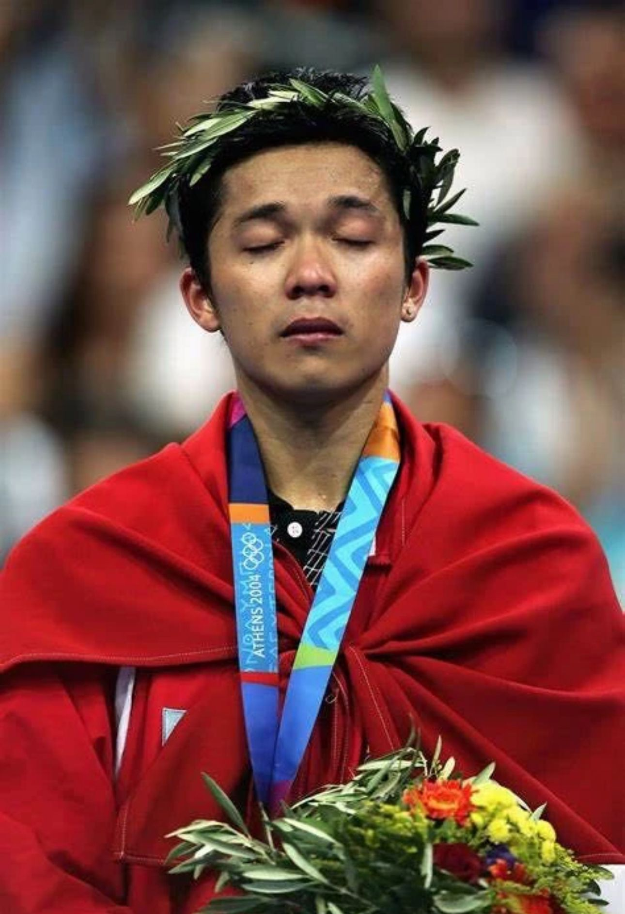
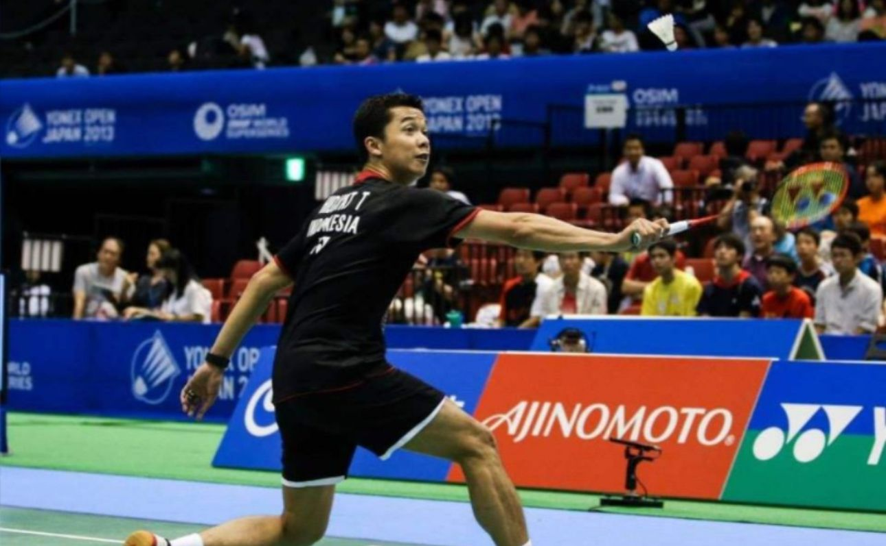

|  | 陶菲克·希达亚特 前印尼羽毛球运动员 |
|
陶菲克·希达亚特（Taufik Hidayat），1981年出生于印度尼西亚万隆，前印度尼西亚羽毛球运动员。
|
||
| 中文名 陶菲克·希达亚特 外文名 Taufik Hidayat（タウフィック·ヒダヤット） 别名 陶菲克 国籍 印度尼西亚 出生地 印度尼西亚 万隆 出生日期 1981年8月10 日 身高 1.78 m 体重 64 公斤 运动项目 羽毛球 所属运动队 印度尼西亚羽毛球队 专业特点 技术全面、充满创造力和想象力 主要奖项 2004年雅典奥运会男单冠军 2006年多哈亚运会男单冠军 |
||
|  | ||
| 点此返回 | ||